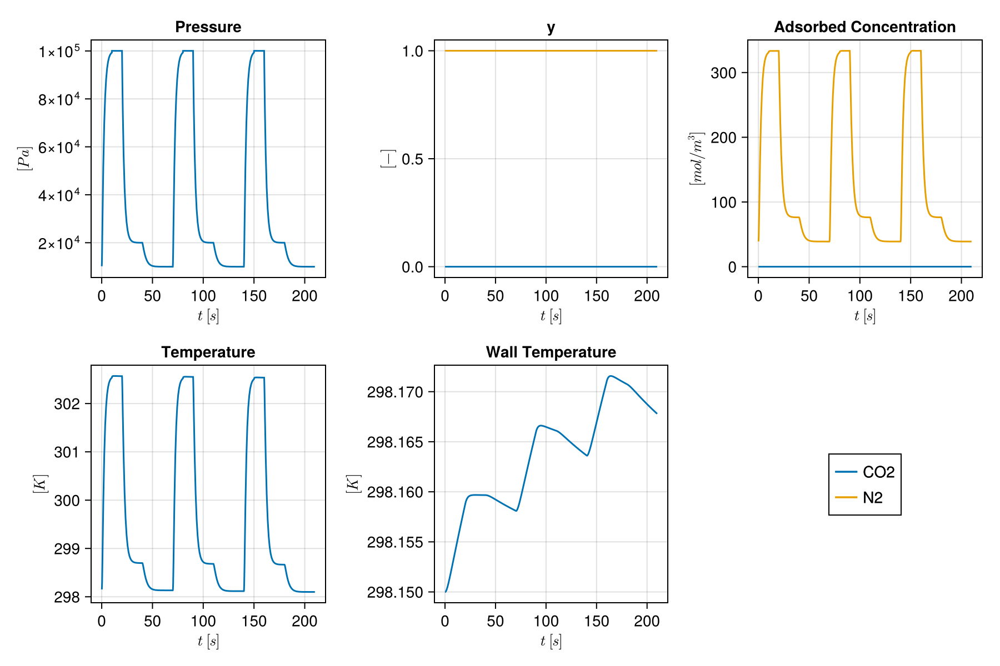

Quick start: processes from files
A whole process — gas, feed, adsorbents, columns, beds, devices, cycle, time stepping and design variables — can be read from a JSON file. Mocca has a library of processes and adsorbents from published studies.
import Mocca
using Mocca.Units
println(Mocca.library_processes())
println(Mocca.library_adsorbents())["haghpanah_2013_four_stage_vsa", "krishnamurthy_2014_dual_adsorbent_vsa", "krishnamurthy_2014_lpp_vsa"]
["silica_gel_krishnamurthy_2014", "zeolite_13x_haghpanah_2013", "zeolite_13x_krishnamurthy_2014"]Read a process from the library
The four-step VSA cycle of Haghpanah et al. (2013), with the design variables of their optimisation study:
process = Mocca.read_process("haghpanah_2013_four_stage_vsa")Process Haghpanah et al. (2013), four-step VSA: CO2/N2 feed at 1.0 bar, 298.15 K, capturing CO2
Bed: fixed bed of zeolite 13X, 30 cells
bottom V_feed (feed), from boundary at 1.0 bar; V_vacuum (extract), to boundary at 0.1 bar
top V_product (product), to boundary at 1.0 bar
cycle of 4 stages, 100.0 s:
pressurisation 15.0 s V_feed
adsorption 15.0 s V_feed, V_product
blowdown 30.0 s V_product
evacuation 40.0 s V_vacuum
variables: t_ads, t_bd, t_evac, P_I, P_L, v_feedChange it
Design variables set every place they act: the evacuation pressure is also where the next pressurisation starts.
process[:P_L] = 0.05bar
process[:t_ads] = 30.0
Mocca.stages(process)4-element Vector{Stage}:
Stage("pressurisation", 15.0, Dict{Symbol, Any}(:V_feed => (law = LinearValve{Float64}(0.0007787555878943804, 1.0), inlet = PortCondition{ExponentialRamp{Float64}, Float64, Vector{Float64}}(ExponentialRamp{Float64}(5000.0, 100000.0, 0.5, 0.0), 298.15, [0.15, 0.85]))))
Stage("adsorption", 30.0, Dict{Symbol, Any}(:V_feed => (law = VolumetricFlow{Float64}(0.02427097880189376), inlet = PortCondition{Float64, Float64, Vector{Float64}}(100000.0, 298.15, [0.15, 0.85])), :V_product => (law = LinearValve{Float64}(0.0007787555878943804, 1.0), outlet = PortCondition{Float64, Float64, Vector{Float64}}(100000.0, 298.15, [1.0e-10, 0.9999999999]))))
Stage("blowdown", 30.0, Dict{Symbol, Any}(:V_product => (law = LinearValve{Float64}(0.0007787555878943804, 1.0), outlet = PortCondition{ExponentialRamp{Float64}, Float64, Vector{Float64}}(ExponentialRamp{Float64}(100000.0, 20000.0, 0.5, 0.0), 298.15, [1.0e-10, 0.9999999999]))))
Stage("evacuation", 40.0, Dict{Symbol, Any}(:V_vacuum => (law = LinearValve{Float64}(0.0007787555878943804, 1.0), outlet = PortCondition{ExponentialRamp{Float64}, Float64, Vector{Float64}}(ExponentialRamp{Float64}(20000.0, 5000.0, 0.5, 0.0), 298.15, [0.15, 0.85]))))Run it to cyclic steady state and measure it
result = Mocca.cyclic_steady_state(process)
perf = Mocca.performance(result)
println("purity $(round(100perf.purity, digits = 1))%, recovery $(round(100perf.recovery, digits = 1))%, ",
"$(round(perf.specific_energy, digits = 1)) kWh/t, productivity $(round(perf.productivity, sigdigits = 3)) mol/(m³·s)")purity 88.4%, recovery 64.3%, 126.9 kWh/t, productivity 0.684 mol/(m³·s)Write it, edit it by hand, read it back
Numbers are SI, or strings with a unit, such as "0.1 bar" or "25 °C". Compositions and per-component values are keyed by component name, steps by their type, and an adsorbent may be the name of a library adsorbent.
file = Mocca.write_process(joinpath(mktempdir(), "vsa.json"), process)
text = """
{
"name": "a short cycle",
"gas": {"components": ["CO2", "N2"], "molar_masses": {"N2": 0.028}, "heat_capacities": {"CO2": 697.5687, "N2": 1096.4}},
"feed": {"composition": {"CO2": 0.15, "N2": 0.85}, "pressure": "1 bar", "temperature": "25 °C"},
"adsorbents": {"13X": "zeolite_13x_haghpanah_2013"},
"columns": {"column": {"length": "1 m", "radius": "14.45 cm", "outer_radius": "16.2 cm", "porosity": 0.37}},
"units": [{"name": "Bed", "adsorbent": "13X", "column": "column", "ncells": 30}],
"devices": [
{"name": "V_feed", "role": "feed", "at": ["Bed", "bottom"]},
{"name": "V_product", "role": "product", "at": ["Bed", "top"]},
{"name": "V_vacuum", "role": "extract", "at": ["Bed", "bottom"]}
],
"cycle": {"steps": [
{"type": "pressurise", "duration": "10 s"},
{"type": "adsorb", "duration": "10 s", "velocity": "1 m/s"},
{"type": "blowdown", "duration": "20 s", "to": "0.2 bar"},
{"type": "evacuate", "duration": "30 s", "to": "0.1 bar"}
]},
"time_stepping": {"max_dt": 1.0, "first_dt": 0.05}
}
"""
file = joinpath(mktempdir(), "short.json")
write(file, text)
short = Mocca.read_process(file)Process a short cycle: CO2/N2 feed at 1.0 bar, 298.15 K, capturing CO2
Bed: fixed bed of zeolite 13X, 30 cells
bottom V_feed (feed), from boundary at 1.0 bar; V_vacuum (extract), to boundary at 0.1 bar
top V_product (product), to boundary at 1.0 bar
cycle of 4 stages, 70.0 s:
pressurisation 10.0 s V_feed
adsorption 10.0 s V_feed, V_product
blowdown 20.0 s V_product
evacuation 30.0 s V_vacuum
Mistakes are reported with where they are:
try
write(file, replace(text, "\"to\": \"0.2 bar\"" => "\"to\": \"2 bar\""))
Mocca.read_process(file)
catch e
println(sprint(showerror, e))
endMoccaInputError in step 3 (blowdown) of the cycle, to: the step should lower the pressure of Bed, but goes from 1.0 bar to 2.0 barSimulate a few cycles and plot the outlet of the bed
result = Mocca.simulate(short; cycles = 3)
bed_states = [s[:Bed] for s in result.states]
f = Mocca.plot_cell(bed_states, short.flowsheet[:Bed], result.timesteps, 30)
Example on GitHub
If you would like to run this example yourself, it can be downloaded from the Mocca.jl GitHub repository.
This page was generated using Literate.jl.